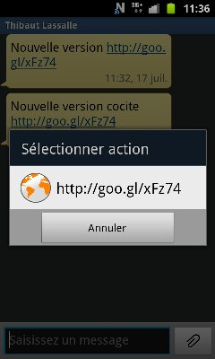
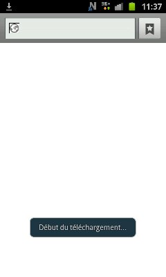
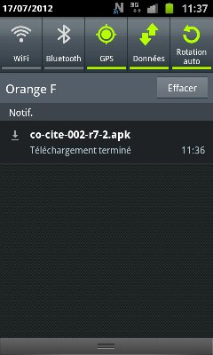
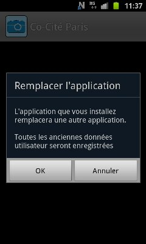
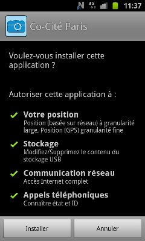
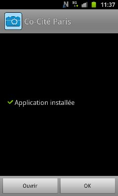

Manuel sur la mise à jour de l'application DansMaRue Paris
Lors d'une mise à jour de l'application DansMaRue, les agents sur le terrain recoivent un texto sur leur téléphone.

L'agent clique sur le lien contenu dans le texto.
Débute alors le téléchargement
La fin du téléchargement se matérialise par un page du navigateur vide.
Il faut alors tirer la barre horizontale en haut de l'écran pour faire apparaitre l'écran suivant :
Cliquer sur le fichier APK téléchargé. Accepter de remplacer l'ancienne application :
Accepter les conditions d'installation :
Cliquer sur "Ouvrir"
La nouvelle version de l'application s'ouvre alors.

Si les applications ne sont pas signées avec le même certificat, il faut faire une désinstallation préalable.